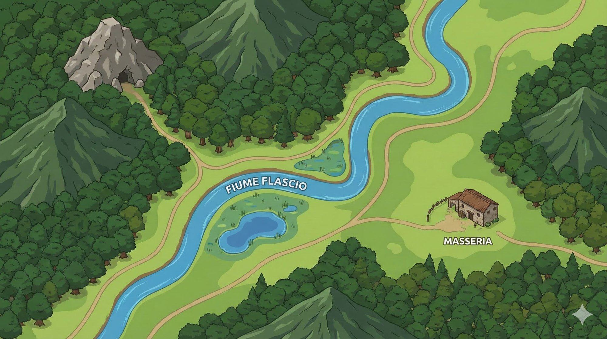
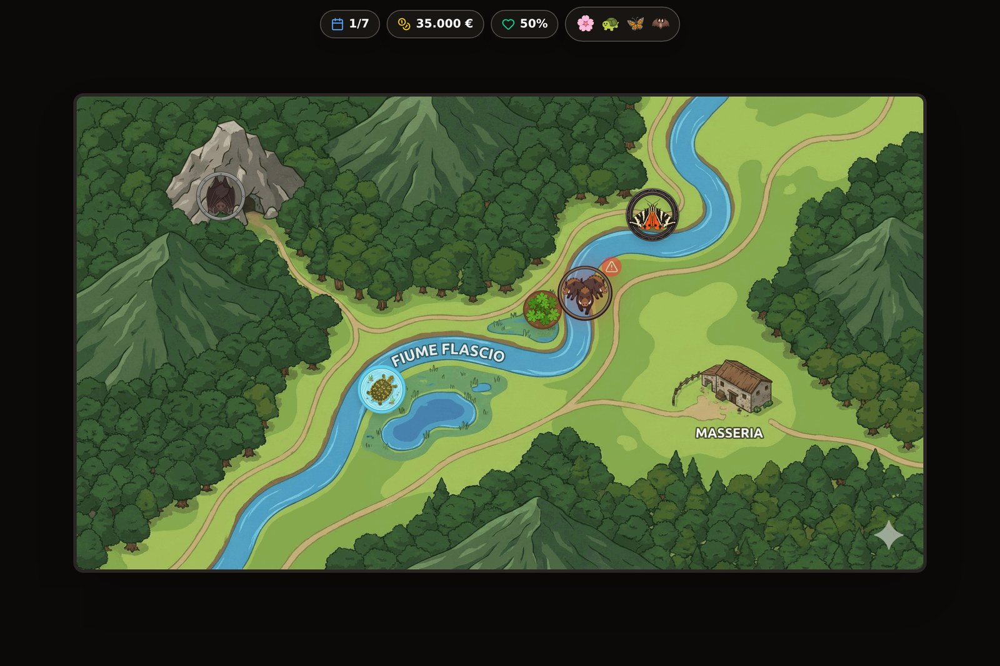
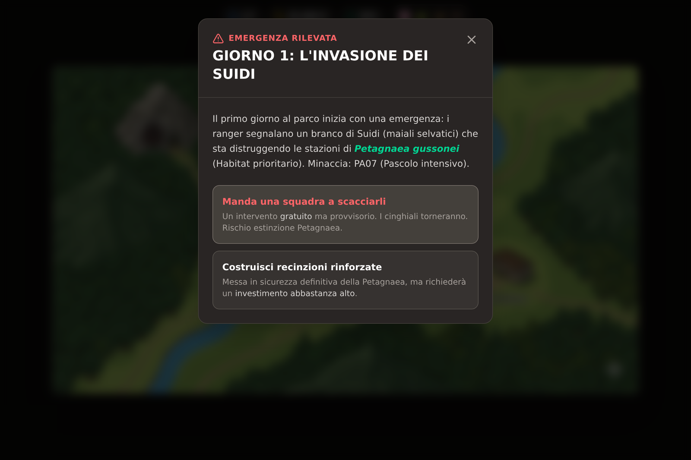
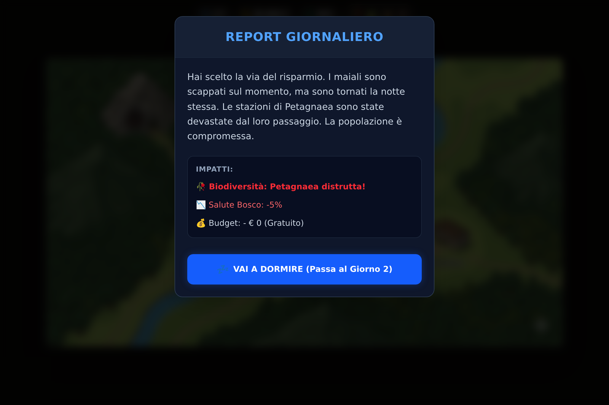
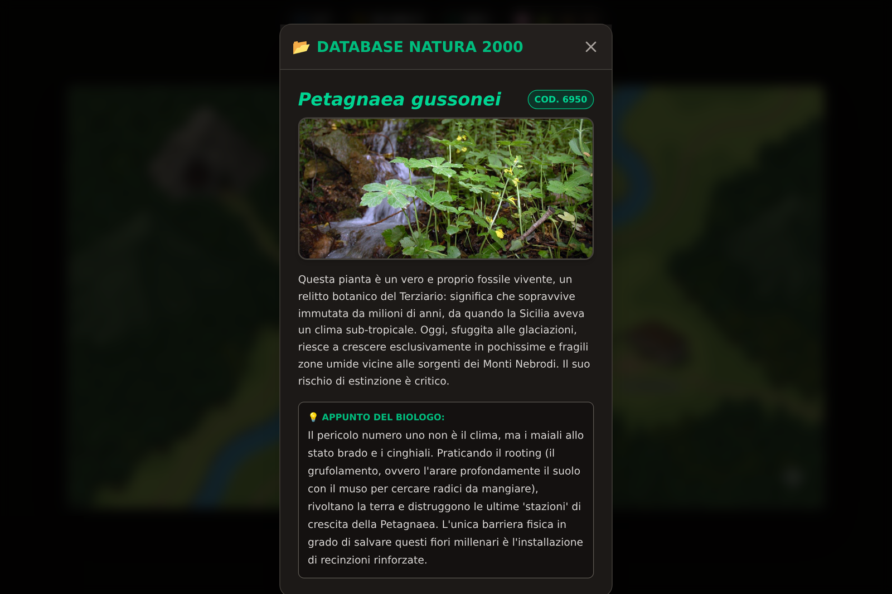

Custodi del Flascio
Il giocatore è il Coordinatore del sito Natura 2000 ITA070007 «Bosco del Flascio», nel Parco dei Nebrodi. Ha sette giornate, 35.000 € di fondi pubblici e quattro specie protette dall'Unione Europea da portare vive alla fine della settimana. Ogni giorno arriva un'emergenza e ogni emergenza costringe a scegliere tra un intervento gratuito ma provvisorio e uno risolutivo ma caro.
The player is the Coordinator of Natura 2000 site ITA070007 "Bosco del Flascio", in the Nebrodi Park. Seven days, €35,000 of public funds, and four EU-protected species that must still be alive at the end of the week. Each day brings an emergency, and each emergency forces a choice between a free but temporary fix and a decisive but expensive one.
Il prototipo non è rimasto sulla mia scrivania: è stato sottoposto a una valutazione esperta con tre docenti di scuola primaria, attraverso una sessione formativa, una prova di gioco in autonomia e un'intervista semi-strutturata. Tutti e tre hanno dichiarato l'intenzione di usarlo in classe e la disponibilità a raccomandarlo, ciascuno motivandolo con un aspetto preciso — la partecipazione attiva e le competenze decisionali, l'efficacia nel rendere l'apprendimento coinvolgente, la capacità di raggiungere tutti gli alunni. Nessuno ha indicato nelle dotazioni tecnologiche della scuola un ostacolo all'adozione.
The prototype did not stay on my desk: it went through an expert evaluation with three primary-school teachers — a training session, independent play, and a semi-structured interview. All three stated they intended to use it in class and would recommend it, each for a specific reason: active participation and decision-making skills, effectiveness in making learning engaging, the ability to reach every pupil. None saw their school's technology as an obstacle to adoption.
Metodo, schema di codifica e risultati completi — limiti inclusi — sono descritti nella sezione dedicata alla tesi.
Method, coding scheme and full findings — limitations included — are described in the thesis section.
Contenuti, specie, pressioni e misure non sono inventati: provengono dalla documentazione del sito redatta ai sensi della Direttiva Habitat 92/43/CEE. La Petagnaea gussonei che rischia di sparire dal quadro comandi è un relitto botanico del Terziario che cresce solo in poche zone umide dei Nebrodi.
Content, species, pressures and measures are not invented: they come from the site's own conservation documentation under the EU Habitats Directive 92/43/EEC. The Petagnaea gussonei that can vanish from the dashboard is a Tertiary botanical relict growing only in a few wet patches of the Nebrodi mountains.




L'estinzione è irreversibile. Se una specie muore, la sua icona si spegne e la sua scheda scientifica diventa per sempre inaccessibile: il giocatore perde non solo un punteggio, ma una fonte di conoscenza. È la traduzione in regola eseguibile dell'idea che sta alla base di tutto il progetto — che la tutela ambientale non si insegna raccontandola, ma facendola decidere.
Extinction is irreversible. When a species dies its icon goes dark and its scientific card becomes permanently unreachable: the player loses not just a score but a source of knowledge. This is the executable-rule translation of the idea behind the whole project — that environmental stewardship is not taught by describing it, but by making someone decide it.
Il percorso tecnico. La prima idea nasce in GDevelop, passa a Twine per esplorare la struttura narrativa a bivi, e arriva infine a una riscrittura completa in React e Next.js: l'unica forma capace di reggere il visore permanente dei parametri, i modali sovrapposti e l'uso su tablet in classe. Tutti i contenuti sono statici e definiti nel codice — una scelta deliberata, perché la riproducibilità dell'esperienza tra utenti diversi era un requisito della sperimentazione.
The technical path. The first idea was built in GDevelop, moved to Twine to explore the branching narrative, and was finally rewritten from scratch in React and Next.js — the only form that could carry the persistent parameter bar, stacked modals and classroom tablet use. All content is static and defined in code: a deliberate choice, because identical experience across users was a requirement of the study.